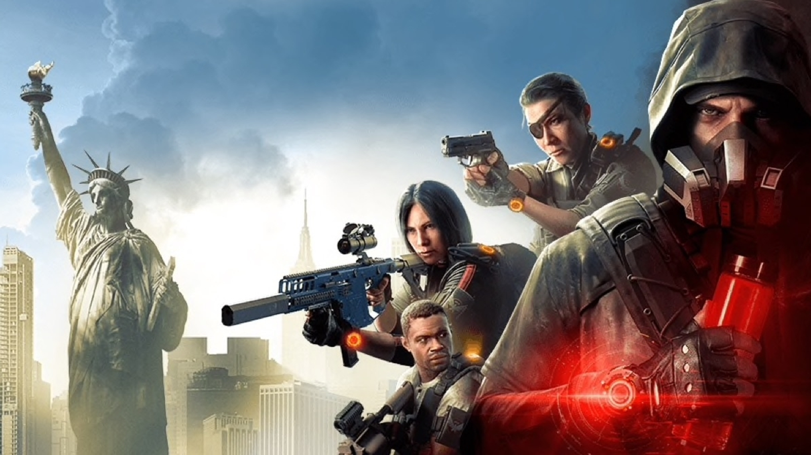
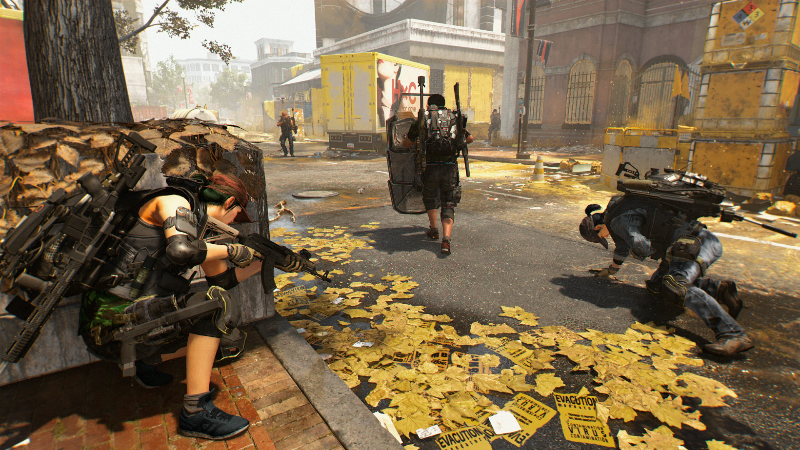

Como usar esta página
- Escolha primeiro a categoria que mais combina com seu estilo
- Depois explore o hub da categoria com o Top 10
- Acesse os guias específicos das builds mais fortes
- Volte sempre que quiser comparar caminhos diferentes
Esta é a página central das builds do portal. Aqui o jogador pode escolher rapidamente entre as quatro grandes categorias do jogo: DPS, Skill, Híbridas e PvP. A ideia é facilitar a navegação, concentrar o conteúdo mais procurado e depois expandir cada hub com páginas específicas das builds campeãs.
Cada categoria abaixo funciona como um centro de conteúdo próprio. Essa é a base ideal para organizar o site sem exagerar no número de páginas isoladas logo no início.
 DPS
DPS
Top builds focadas em dano bruto, crítica, headshot e desempenho em heroica, raid, incursão e lendária.
 SKILL
SKILL
Turret, drone, status, healer, jammer e outras opções voltadas para segurança, controle e suporte.

HÍBRIDASCombinações de dano com sustain, headshot com sobrevivência e setups versáteis para progressão real.

PVPSMG, shotgun, AR, tank, sustain e variações para Zona Cega e Conflito.
Estes são os guias individuais já prontos e ligados ao restante do site. Eles servem como ponto de profundidade dentro dos hubs principais.
Guia completo de uma das builds mais fortes e mais usadas do jogo.
Guia voltado para farm, Countdown, Summit e PvE com segurança.
Os próximos guias individuais podem sair dos hubs DPS, Skill, Híbridas ou PvP conforme prioridade do portal.
Com DPS, Skill, Híbridas e PvP organizadas em hubs próprios, o site fica mais profissional, mais escalável e muito mais fácil de navegar. A partir daqui, cada nova build específica entra de forma natural.